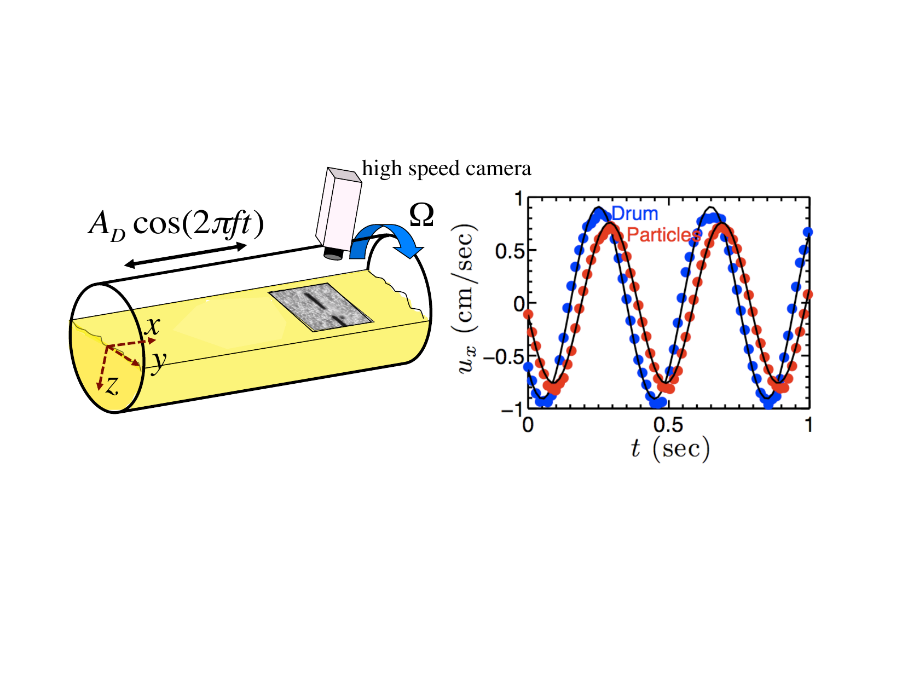
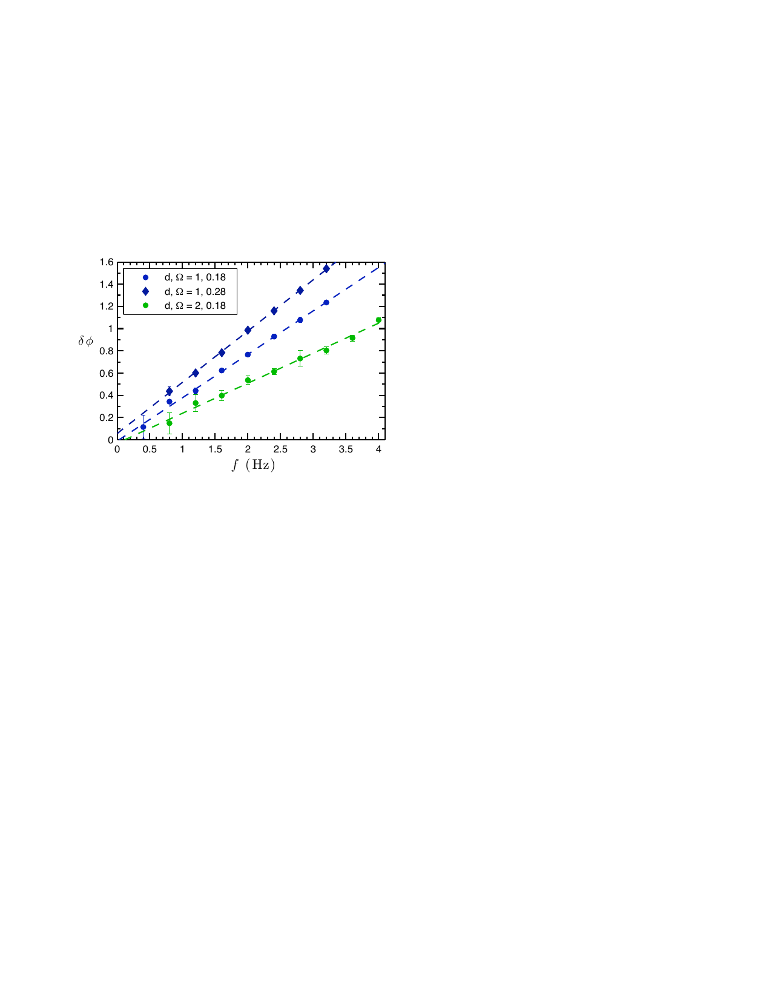
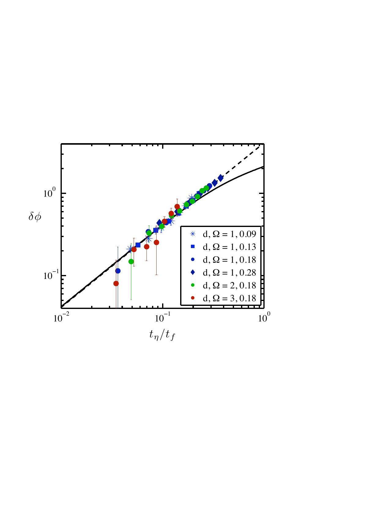
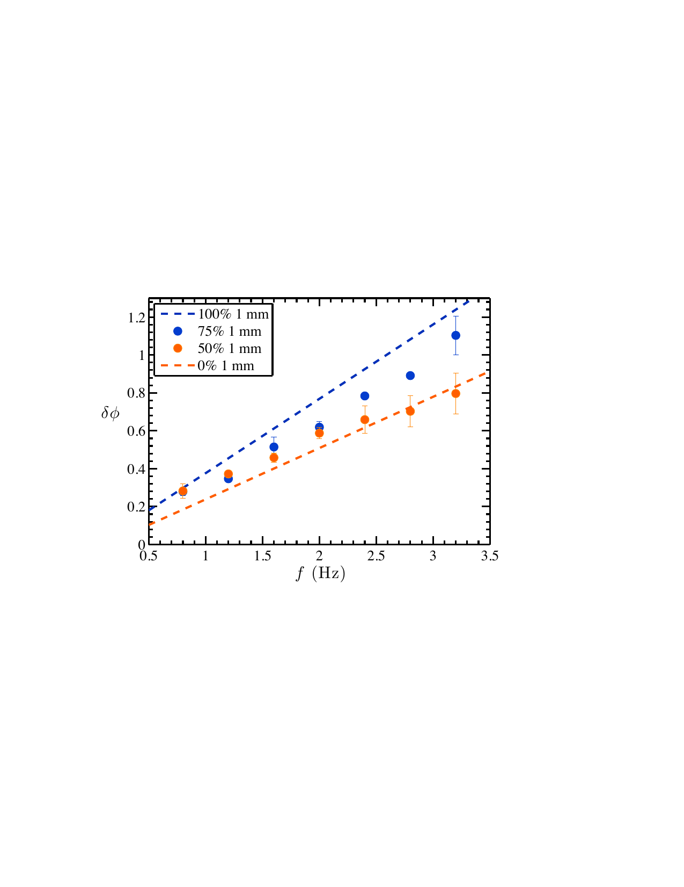

How does a flowing granular material respond when you push it sideways? This question sits at the heart of granular rheology — the study of how dense collections of grains flow under stress. This work introduces a new tabletop geometry for probing the rheological properties of granular matter that is already in a flowing (fluidized) state, moving beyond simple viscosity measurements to characterize the full dynamic response of the material.

The setup fluidizes granular matter — glass beads of 1–3 mm diameter — by rotating a horizontal drum about its long axis. The grains form a steady flowing layer along the drum surface, captured at 500 fps by a high-speed camera. On top of this primary flow, a second shear is applied by oscillating the drum along its axis at frequency f. The grains respond to this secondary forcing with a measurable phase lag δφ — the angle by which the grain motion lags behind the drum oscillation. This phase lag encodes the rheological state of the flowing material, analogous to the loss angle in conventional viscoelastic measurements.
At low forcing frequencies, the phase lag scales linearly with f — a non-Newtonian signature, since a Newtonian fluid would give δφ ∼ √f. This linear scaling is well described by the GDR-Midi model, a continuum framework for dense granular flow that treats the material as a frictional medium with a shear-rate-dependent effective viscosity. Fitting the linear regime yields the effective friction coefficient μ for the flowing layer, providing a direct rheological measurement that matches the expected value from steady-state inclined-plane theory.


At higher oscillation frequencies — when the forcing timescale becomes comparable to the material's own viscous relaxation time tη — the GDR-Midi model breaks down. The experimental data show a smaller phase lag than predicted, implying the material flows more easily than the model expects. This is attributed to the slow reorientation of force chains and the fabric tensor: granular flows are transiently weak when their principal stress axis changes direction, and the material remains in this weakened state for a time comparable to tη. The dimensionless ratio tη/tf neatly collapses all data onto a single master curve, identifying it as the key parameter governing the onset of model breakdown.
Extending the measurements to binary mixtures of 1 mm and 2 mm beads reveals a striking result: even a small fraction of fine particles can dramatically alter the rheology of the flowing layer. After the grains segregate by size (with fine particles migrating to the interior), the mixture response at low forcing resembles that of pure 1 mm beads — far softer than the 2 mm system — suggesting that a small number of fine particles in the flowing surface layer disproportionately control the bulk rheological response.
